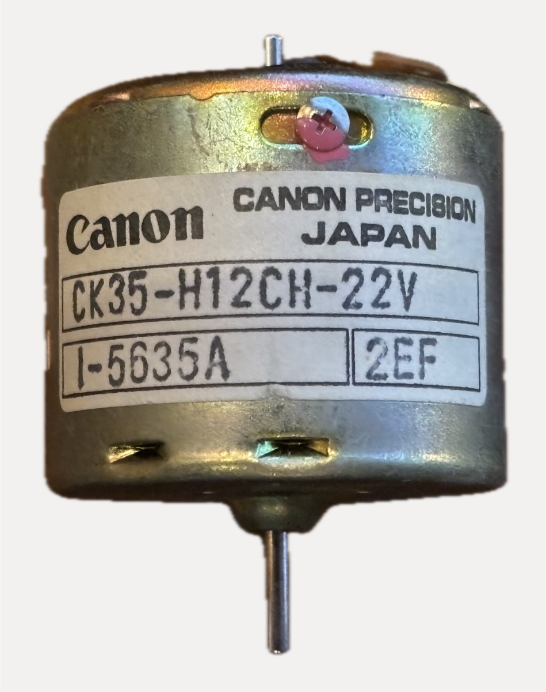
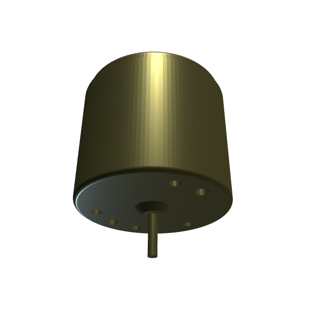
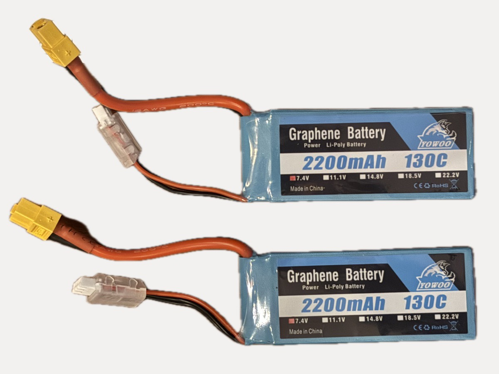

Parts Library
Hardware on hand for the robot platform — things we might use, might not.
One card per part; keep the table and cards in sync. Photos live in photos/.
| ID | Part | Qty | Status | Notes |
|---|---|---|---|---|
| M1 | Canon CK35-H12CH-22V DC motor | 2 | untested | 22 V brushed, from old robot |
| D1 | Devantech MD22 dual motor driver | 1 | untested | I2C/analog/RC, 5 A per channel |
| R1 | Devantech CM02 radio module | 1 | verify | glimpsed on same robot, unconfirmed |
| B1 | GP TC204 NiMH pack 7.2 V 3300 mAh | 1 | verify | ~20 years old; check before use |
| B2 | Yowoo 2S LiPo 7.4 V 2200 mAh | 2 | untested | XT60 + JST-XH balance lead |
Status legend: untested not powered up yet · verify needs a bench check before trusting · ok tested working · retired kept for reference, don't design around it.
Canon CK35-H12CH-22V brushed DC motor
untested×2Label: Canon Precision Japan / CK35-H12CH-22V / I-5635A / 2EF
(I-5635A is an OEM customer part number, 2EF a lot/date code).
- Vintage (1970s–90s) Canon Precision 35 mm-class round-can brushed DC motor, same family as the CA35/EN35 tape-transport motors.
- Rated 22 V per the label suffix — higher than the usual 12 V cassette motors; this class came out of reel-to-reel decks, projectors, and office machines with a ~24 V rail.
- Two leads (black/white), double-ended shaft: long ~2 mm working shaft one end, short stub the other (pulley/flywheel/sensor side).
- No public datasheet found. Expectations for the class: ~1–3 W, 2 000–6 000 rpm no-load at rated voltage, tens of mA no-load, very low torque — needs a ~20–50:1 reduction to drive a wheel.
- Two wires means either a plain brushed motor or one with an internal speed governor. Governor check: run at 6/12/18 V — if speed plateaus instead of scaling with voltage, it's governed (bad for PWM control).
To verify before designing around them:
- Governor check (above)
- No-load current at a few voltages
- No-load speed (slow-mo video of a tape flag, or strobe app)
- Terminal resistance (spin slowly, take the lowest reading)
- Measured 2026-08-29: parametric CAD model in
cad/parts/ck35_motor.py— can Ø34.3 × 27.6 mm, Ø2.0 shaft (9.0 mm working end / short stub), six front holes on a Ø25.7 bolt circle (4 × ~2.4 mm likely tapped 4-40 per the "INCH" face stamp, 2 × Ø3.0 plain, opposite each other)
{kind=link}

{kind=link}

cad/parts/ck35_motor.py), mounting face.Devantech MD22 dual DC motor driver
untested×1UK-made dual H-bridge board, early 2000s (PIC16F873 date code 2004). Docs: robot-electronics.co.uk/htm/md22tech.htm
- Two channels, 5 A continuous each; motor supply up to 24 V — plenty for the M1 motors, and works fine down at 7.2 V.
- Separate 5 V logic supply, ≤50 mA.
- Bottom screw terminals: +V, M1, M2, GND (battery + both motors). Top terminal block: 5 V logic and control lines.
- Four control modes, set by the blue DIP switch at power-up only: I2C (addresses 0xB0–0xBE; registers for mode, speed1, speed2/turn, acceleration), analog 0–5 V (2.5 V = stop), RC servo pulses (1–2 ms), and combined modes with differential steering.
- The current DIP setting records how the original robot drove it — decode before changing.
- Age caution: bring up on a current-limited supply first; eyeball the 2200 µF/63 V Nover electrolytic.
No photo in the library yet.
Devantech CM02 radio module
verify×1, unconfirmedSmall green board silkscreened CM02 seen mounted above the MD22 on the
old robot chassis — matches Devantech's CM02 radio communications module (I2C radio
link, companion to the MD22 era). Not yet removed or inspected; confirm identity and
condition before listing specs.
No photo in the library yet.
GP TC204 NiMH battery pack, 7.2 V 3300 mAh
verify×1Six-cell NiMH stick pack ("Racing Car" type) with Tamiya connector. Same vintage as the robot — almost certainly its original power source.
- NiMH, so no lithium-style fire risk; realistic failure modes are dead cells, leakage, or warming during charge.
- Even if revived, expect well under 3300 mAh and higher internal resistance. For bench work prefer a current-limited PSU; for the real robot a modern pack is cheap.
- Disposal, if it comes to that: battery recycling bin / genbrugsstation, never household waste.
Decision procedure (as of 2026-08-27, not yet done):
- Inspect under the shrink wrap for crust/damp/bulging → recycle if any
- Open-circuit voltage: 7.0–8.0 V healthy · 4–7 V deeply discharged, maybe recoverable · <3 V cell(s) reversed/shorted → recycle
- If reviving: first charge at ~300 mA (0.1 C), supervised; hot pack → stop and recycle
No photo in the library yet.
Yowoo "Graphene" 2S LiPo, 7.4 V 2200 mAh
untested×2Modern LiPo packs, XT60 main connector, JST-XH 3-pin balance lead, 12 AWG silicone wires. Label claims 130C discharge — marketing fiction (that would be 286 A through 12 AWG); treat them as good-quality ~30C packs, still far more current than this robot will ever draw.
- 2S: 7.4 V nominal, 8.4 V full, don't discharge below ~6.4 V (3.2 V/cell) — the robot should have a low-voltage cutoff or alarm.
- Charge only with a balance charger (via the JST-XH lead), 1C = 2.2 A max, supervised, on a non-flammable surface.
- Store at storage charge (~3.8 V/cell ≈ 7.6 V), not full — full packs sitting for months puff and age fast.
- Inspect for puffing/soft swelling before each use; a puffed pack is retired to the recycling bin (discharged first).
- Fit: drop-in for the MD22 (well within 24 V max); drives the M1 motors gently at ~⅓ of their 22 V rating. XT60 → MD22 screw terminals needs a short pigtail; NiMH pack B1 uses Tamiya, so connectors don't interchange without an adapter.
To verify:
- Cell voltages via balance lead (healthy: 3.7–4.2 V/cell, delta <0.05 V)
- No puffing; packs feel firm
- Capacity check on the charger if it supports discharge cycles
{kind=link}
